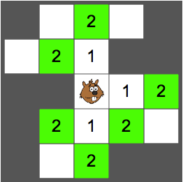
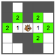
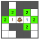

Ratkaisu
Tässä on ratkaisu:


Esimerkiksi punaisella korostettua ruutua ei merkitty, koska siihen pääsee lyhimmillään 3 askeleella.
Tämä on tietojenkäsittelyä!
Tehtävä esittelee tietojenkäsittelyn sovelluksissa yleisen lyhimpien polkujen ongelman, jossa halutaan selvittää lyhin reitti alkupisteestä toiseen paikkaan. Esimerkiksi nykyisin yleisesti käytetyt sähköiset palvelut, jotka osaavat ehdottaa käyttäjälle lyhimmän ajoreitin tai bussireitin kahden osoitteen välillä, perustuvat tämäntapaisen ongelman ratkaisuun. Katso lisää esim. https://fi.wikipedia.org/wiki/Polunetsintä.
Tehtävän yksi tyypillinen ratkaisumenetelmä pohjautuu sellaiseen leveyssuuntaiseen hakuun, jossa etäisyydet alkupisteestä muihin pisteisiin määritetään etäisyyksien suhteen kasvavassa järjestyksessä. Esimerkiksi tässä tehtävässä majavan etäisyys (askeleiden määrä) kaikkiin muihin ruutuihin voidaan määrittää merkitsemällä ensin alkupisteen välittömiin naapureihin arvot 1, sen jälkeen kaikkiin arvon 1 saaneiden ruutujen välittömiin tyhjiin naapureihin (joilla ei ole vielä arvoa) arvot 2, sen jälkeen kaikkiin arvon 2 saaneiden ruutujen välittömiin tyhjiin naapureihin arvot 3, jne. Kun ruudukon kaikki ruudut ovat saaneet arvot, on meillä tiedossa kaikki lyhimmät polut majavan alkuruudusta muihin ruutuihin. Polun askeleet voidaan selvittää peruuttamalla kohderuudusta askeleittain kohti majavan alkuruutua: kullakin askeleella voidaan peruuttaa nykyruudusta sellaiseen naapuriin, jonka arvo on 1 pienempi kuin nykyruudun arvo. Tämä peruutusketju päättyy majavan alkuruutuun. Katso lisää esim. https://fi.wikipedia.org/wiki/Dijkstran_algoritmi.
 
